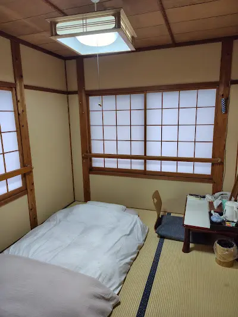
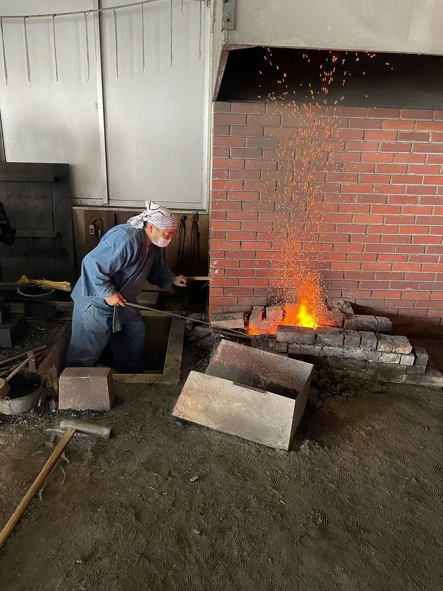
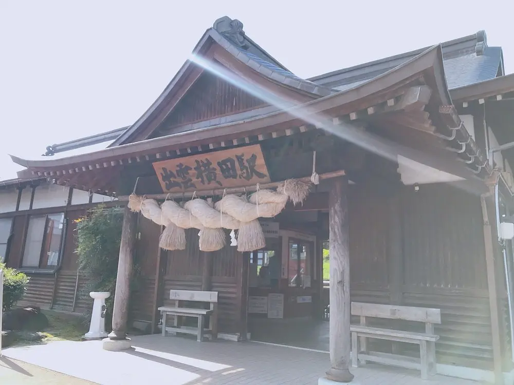
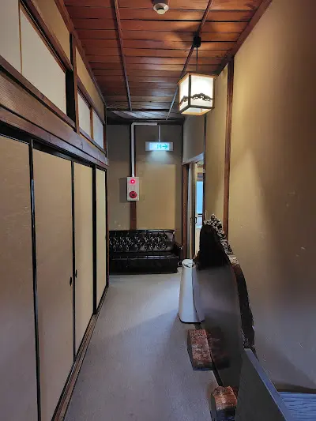
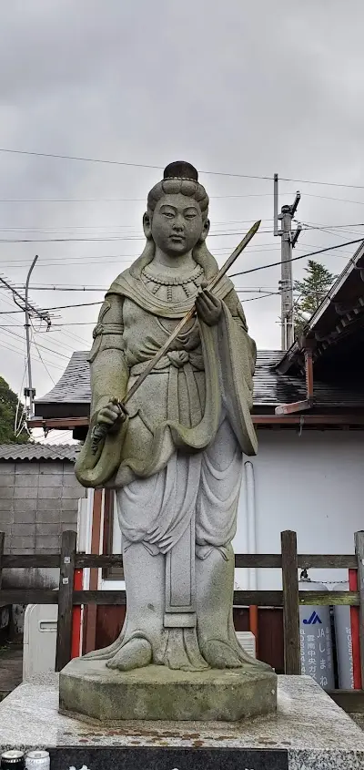
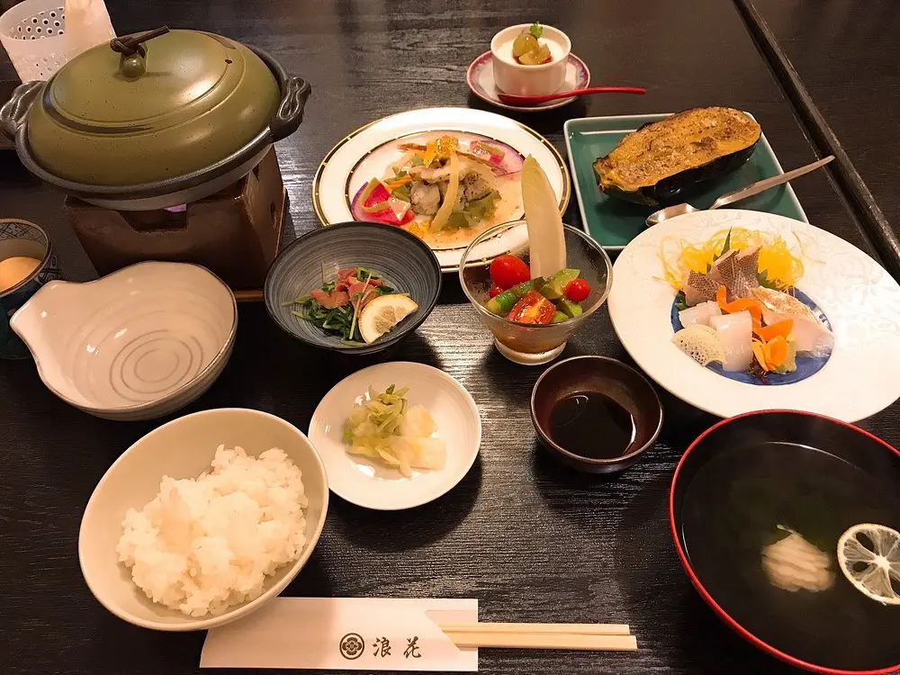
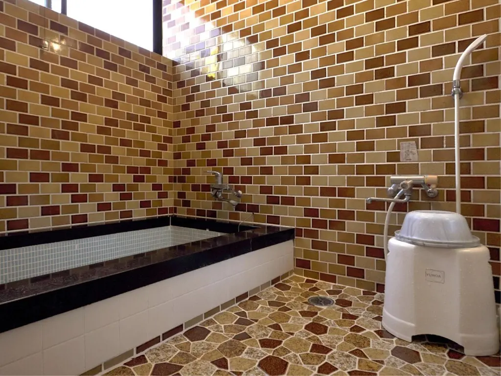
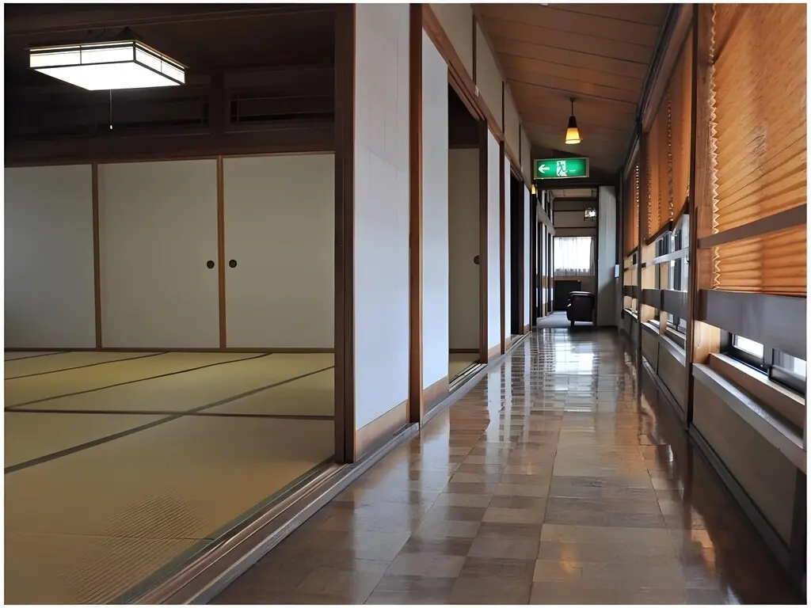

There are places in Japan where the distance between the present and the mythological past compresses to almost nothing. Okuizumo — a mountain-interior town in Shimane Prefecture, enclosed on all sides by the Chugoku Mountains, accessible only by a single-track railway that takes two hours from Matsue — is one of them. The Hii River flows through the valley below. According to the oldest written record of Japanese mythology, the Kojiki, this is the river where Susanoo no Mikoto slew Yamata no Orochi, the eight-headed serpent — and found the divine sword Kusanagi embedded in the creature's tail. The sword came from this river. The iron came from this mountain. The tatara ironworking tradition that has been extracting satetsu iron sand from these slopes for over a thousand years and forging it into tamahagane steel is the direct real-world origin of the Nichirin blade from Demon Slayer.
Naniwa Ryokan (浪花旅館) stands one minute on foot from JR Izumo-Yokota Station — the station that serves both the town and the Okuizumo Tatara Sword Museum, a three-minute drive away. It is a former kaiseki restaurant (料亭) converted to an inn by the current owner, who continues to cook the seasonal Shimane cuisine that made the original establishment's reputation. Eight tatami rooms. Shared baths updated in 2019 with a new boiler. From ¥5,500 per person. It is not a luxury ryokan and makes no claim to be one. It is the right place to sleep in Okuizumo — the closest accommodation to the Tatara Sword Museum, run by someone who understands what the ingredients of this valley taste like.
The Ryokan: Former Kaiseki Restaurant, Eight Rooms

Naniwa Ryokan's identity as a former kaiseki restaurant (料亭) is the detail that explains the food. The owner did not come to innkeeping from hotel management — the building's original purpose was fine dining, and the kitchen inherited that orientation. The evening meal draws on what is available from Shimane's mountain interior and from the Sea of Japan coast accessible from this central position: river fish from the Hii River valley, mountain vegetables gathered from the slopes above the town, seafood from Genkai and the San'in coast, local sake. The breakfast is Japanese: miso, rice, grilled fish, seasonal pickles.
The eight tatami rooms divide into four sizes — 4-tatami (up to 2 guests), 6-tatami (up to 3), 8-tatami (up to 4), and 10-tatami (up to 5) — all non-smoking, all with free WiFi, all with yukata, towels, shampoo, body soap, and hairdryers available at shared facilities. The shared baths were updated in 2019 with a new boiler; hot water runs continuously. A coin laundry is available for longer-stay pilgrims. Check-in runs from 4 PM to 9 PM (last entry for dinner plans: 7 PM); check-out is at 10 AM. Cancellation is free up to three days before arrival.
The rate — from ¥5,500 per person per night, breakfast available for an additional ¥1,100 — reflects the ryokan's honest positioning. This is working accommodation in a working mountain town, not atmospheric tourism infrastructure. The town of Okuizumo itself provides the atmosphere: the Hii River running through the valley below, the Chugoku Mountains visible from every direction, the specific quality of silence that only small mountain towns at the end of single-track railways produce.
The Tatara Sword Museum: Three Minutes Away

The Okuizumo Tatara Sword Museum stands three minutes by car from Naniwa Ryokan, or a 15-minute walk from Izumo-Yokota Station along the river road. Its full-size replica of an underground tatara facility — the clay furnace in which iron sand is smelted over 72 continuous hours into tamahagane steel — is the most complete documentation of this process available to the public in Japan. The Swordsmith Village arc of Demon Slayer is set in a hidden community of tatara craftsmen producing Nichirin blades from exactly this process; the museum is that community's non-fictional equivalent.
Live demonstrations of blade forging and tameshigiri (test cutting) are held on the second Sunday and fourth Saturday of each month — these are the days to plan around. The demonstration admission runs approximately ¥1,250 versus ¥520 standard. On demonstration days the forge operates at full heat, visitors can operate the bellows, handle hot steel, and hold completed blades. The experience of standing in a working tatara forge — the heat, the iron smell, the weight of the process — produces a physical understanding of the Nichirin blade's significance that no amount of reading the anime provides.
The museum's front plaza features a sculpture of Yamata no Orochi, the eight-headed serpent of the Kojiki myth. The sword that killed it — Kusanagi, found in its tail, the ancestor of all Japanese sword mythology — was made from the same iron that this museum documents. The mythological loop is complete, and Naniwa Ryokan sits at its center.
Practical Information
- Check-in: 4:00 PM–9:00 PM (dinner plan guests: last entry 7:00 PM)
- Check-out: 10:00 AM
- Rooms: 8 tatami rooms — 4, 6, 8, and 10-tatami configurations, all non-smoking
- Rate: From ¥5,500 per person/night; breakfast ¥1,100 additional
- Dining: Seasonal Shimane cuisine (former kaiseki kitchen); Japanese breakfast available
- Facilities: Shared baths (new boiler 2019), shower room, coin laundry, free WiFi
- To Tatara Museum: 3 min by car / 15-min walk from Izumo-Yokota Station
- Forging demos: 2nd Sunday and 4th Saturday of each month — book travel accordingly
- Cancellation: Free up to 3 days before arrival
- Parking: 7 spaces, free. Town parking lot at Izumo-Yokota Station also free.
| Full Name | Naniwa Ryokan (浪花旅館) |
| Address | 1024-3 Yokota, Nita District, Okuizumo-cho, Shimane Prefecture 699-1832 |
| Anime Connection | Demon Slayer — base for Okuizumo Tatara Sword Museum / Nichirin blade pilgrimage (Location 10) |
| Type | Former kaiseki restaurant (料亭) — family-run tatami inn |
| Rooms | 8 rooms — 4/6/8/10-tatami, all non-smoking, capacity 2–5 guests per room |
| Rate | From ¥5,500 per person/night (breakfast ¥1,100 additional) |
| Nearest Station | JR Izumo-Yokota Station (JR Kisuki Line) — 1-min walk |
| To Tatara Museum | 3 min by car / 15-min walk |
| From Matsue/Izumo | ~2 hours by JR Kisuki Line |
Book Directly
Naniwa Ryokan accepts reservations by phone or via Jalan (Japan's domestic booking platform).
Phone: +81-854-52-1014 (Japanese)
Online reservations: Jalan.net — Naniwa Ryokan →
Official site: primenet2010.biz/naniwa-ryokan →
Reservations via Jalan require a Japanese address or proxy booking service for international travelers. Phone reservations in Japanese are recommended for the most direct confirmation.
Planning the full Demon Slayer pilgrimage? Read the complete guide: Tracing the Blade — Every Real-Life Demon Slayer Location in Japan →
Photo Gallery

Photo 1
Photo 2
Photo 3'">
Photo 4'">
Photo 5'">
Photo 6'"> ← Back to Stay